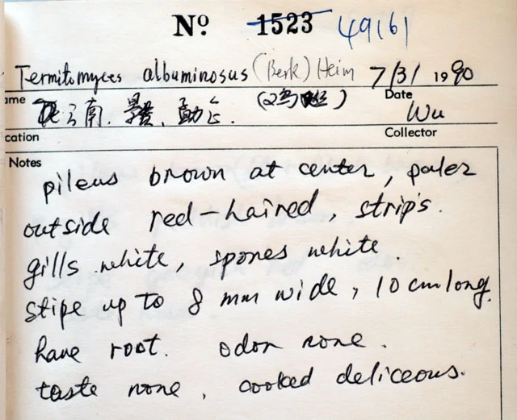

真菌 · 真菌界
鸡枞菌 Termitomyces albuminosus

从白蚁巢穴中长出的珍贵野生菌，菌盖中央有尖突、菌柄细长，味道鲜美如鸡汤，是云南著名的“菌中之王”。
- 分类
- 门担子菌门纲伞菌纲目伞菌目科离褶伞科属鸡枞属
- 栖息环境
- 白蚁巢穴上方的林地、草坡和田间，与白蚁形成专性共生关系
- 地理分布
- 中国云南、四川、贵州等地及东南亚部分地区的热带亚热带林地
- 保护级别
- 暂无评估（IUCN 未评估，中国未列入重点保护名录）
物种志
鸡枞菌是担子菌门伞菌目的共生真菌，子实体单生或群生。菌盖初期圆锥形，后平展并中央有明显尖突，直径 3–15 cm，表面灰褐色至黑褐色，边缘常有辐射状裂纹；菌褶白色，密集；菌柄细长，白色至灰白色，基部膨大并延伸成“假根”，深入白蚁巢中；孢子印粉红色。
鸡枞菌与白蚁形成专性共生关系，只生长在白蚁巢穴的上方，多出现在云南、四川、贵州等地的林地、草坡和田间，雨季出菇。它的菌肉细嫩、味道鲜美，煮汤时汤色清亮、鲜味浓郁，被誉为“菌中之王”。由于无法人工栽培、依赖野生资源，鸡枞菌价格较高。采摘要掌握时机，菌盖未完全展开时品质最好；不认识的菌类不要采食。
形态与习性
- 菌盖直径 3–15 cm，中央有明显尖突
- 菌褶白色，密集排列
- 菌柄细长，基部延伸成假根，深入白蚁巢
- 孢子印粉红色
- 共生与白蚁形成专性共生关系
- 采收期雨季出菇，菌盖未完全展开时最佳
- 食用性鲜美可食，煮汤鲜味浓郁
趣味知识
- 鸡枞菌只生长在白蚁巢穴上方，与白蚁形成专性共生关系。
- 它至今难以人工栽培，因此价格较高。
- 煮汤时汤色清亮、鲜味浓郁，被称为“菌中之王”。
- 菌盖未完全展开的鸡枞菌品质最好。